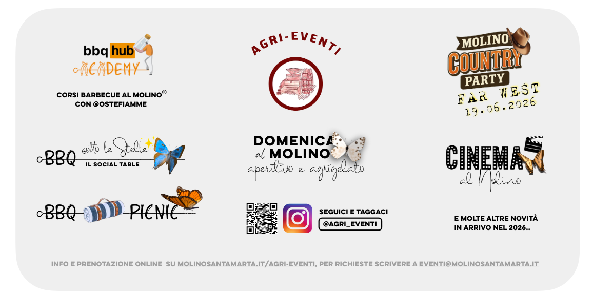

Agri-Eventi
Il parco del Molino vive anche oltre l'aperitivo.
Aperitivi nel verde, picnic serviti all'aria aperta, barbecue, cinema sotto le stelle e appuntamenti speciali: una piccola pubblicità del mondo Agri-Eventi, pensata per chi vuole vivere il Molino come esperienza, non solo come menu.
Aperitivo & Agrigelato
Picnic nel parco
BBQ & Country Party
Cinema all'aperto

Info e prenotazioni
Questa base è già pronta per QR code e futuri upgrade.
Possiamo aggiungere video, allergeni, descrizioni più ricche, filtri per categorie e un flusso ordine ancora più completo.